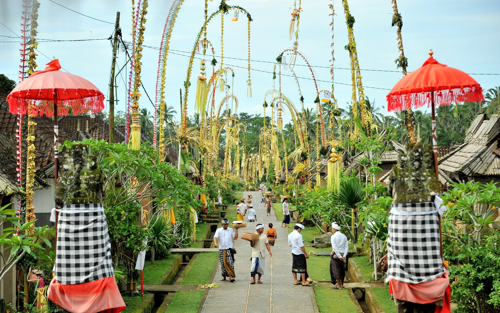
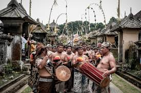
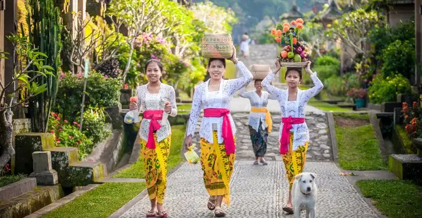
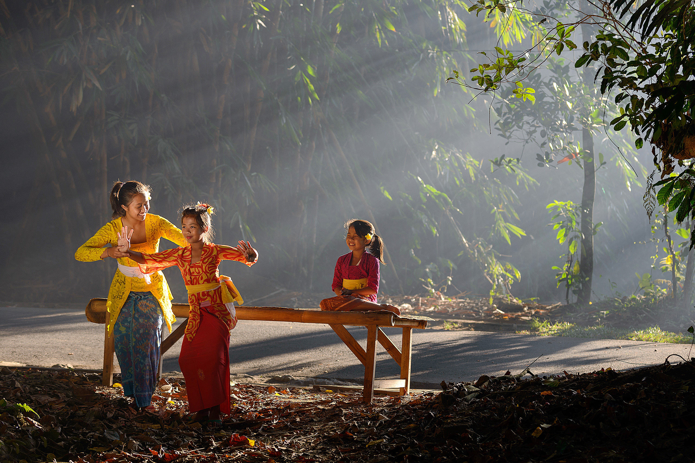

Website resmi Desa Panglipuran, Kecamatan Bangli, Kabupaten Bangli, Provinsi Bali
Desa Panglipuran adalah sebuah desa wisata yang terletak di Kecamatan Bangli, Kabupaten Bangli, Provinsi Bali. Desa ini dikenal dengan keindahan alamnya yang menjadikannya destinasi wisata yang populer.
Total area dari desa ini mencapai 112 hektar dengan ketinggian 500-600 meter di atas permukaan laut dan berlokasi sekitar 5 kilometer dari kota Bangli atau 45 kilometer dari Kota Denpasar. Desa ini dikelilingi oleh desa adat lainnya, seperti Desa Kayang di utara, Desa Kubu di timur, Desa Gunaksa di selatan, dan Desa Cekeng. Temperatur bervariasi dari sejuk sampai dingin (16-29 °C) dan curah hujan rata-rata 2000 mm pertahun. Permukaan tanah termasuk rendah dengan ketinggian 1-15 meter.
Desa Penglipuran dipercaya mulai berpenghuni pada zaman pemerintahan I Dewa Gede Putu Tangkeban III.[1] Hampir seluruh warga desa ini percaya bahwa mereka berasal dari Desa Bayung Gede. Dahulu orang Bayung Gede adalah orang-orang yang ahli dalam kegiatan agama, adat dan pertahanan. Karena kemampuannya, orang-orang Bayung Gede sering dipanggil ke Kerajaan Bangli. Namun, karena jaraknya yang cukup jauh, Kerajaan Bangli akhirnya memberikan daerah sementara kepada orang Bayung Gede untuk beristirahat. Tempat beristirahat ini sering disebut sebagai Kubu Bayung. Tempat inilah kemudian yang dipercaya sebagai desa yang mereka tempati sekarang. Mereka juga percaya bahwa inilah alasan yang menjelaskan kesamaan peraturan tradisional serta struktur bangunan antara desa Penglipuran dan desa Bayung Gede.
Kepala Desa: I Wayan Supat
Sekretaris Desa: I Made Sudarma
Bendahara: Ni Luh Sari Dewi




Alamat: Desa Panglipuran, Kecamatan Bangli, Kabupaten Bangli, Provinsi Bali
Telepon: 0366 123456
Email: info@desawisatapanglipuran.id
Desa Panglipuran memiliki beberapa fasilitas pendidikan, termasuk SD Negeri Penglipuran dan SMP Negeri Penglipuran. Selain itu, terdapat juga beberapa lembaga pendidikan non-formal yang menyediakan pelatihan keterampilan bagi warga desa.
Desa Panglipuran memiliki beberapa fasilitas kesehatan, termasuk Puskesmas Penglipuran dan beberapa rumah sakit swasta. Selain itu, terdapat juga beberapa lembaga kesehatan non-formal yang menyediakan layanan kesehatan bagi warga desa.
Untuk mencapai keharmonisan bersama dalam bermasyarakat, warga Desa Adat Penglipuran mempunyai 2 jenis hukum yang mereka taati dan ikuti yaitu Awig (peraturan tertulis) dan Drestha (adat kebiasaan tak tertulis).
Bagi masyarakat Desa Penglipuran, mempunyai lebih dari satu istri merupakan hal yang dilarang. Jika seseorang mempunyai lebih dari satu istri maka ia dan istri-istrinya harus pinda dari karang kerti ke karang memadu (masih di dalam desa tetapi bukan bagian utama). Hak dan kewajibannya sebagai warga Desa Adat Penglipuran juga akan dicabut. Setelah orang tersebut pindah, maka akan dibuatkan rumah oleh warga desa tetapi mereka tidak akan boleh melewati jalanan umum ataupun memasuki Pura dan mengikuti kegiatan adat.
Tidak semua pura dapat didatangi oleh setiap orang untuk beribadah kecuali pura utama yaitu Pura Besakih. Oleh sebab itu, warga Hindu Bali mempunyai pura yang mereka puja dan datangi masing-masing. Pura ini dibedakan berdasarkan keluarga masing-masing, tidak terkecuali Desa Adat Penglipuran. Terdapat 3 kewajiban memuja yang harus diikuti oleh warga Desa Adat Penglipuran.